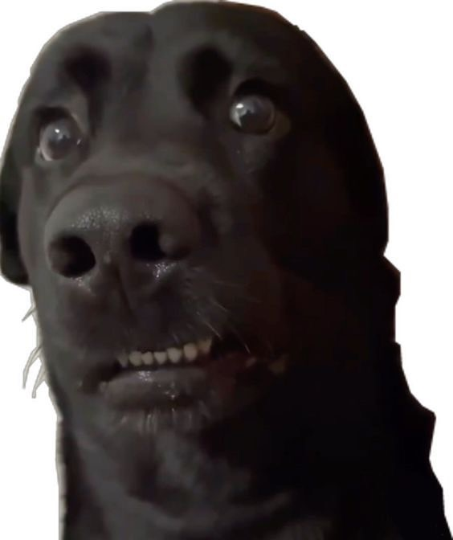

Ramadan, Subway, and The Day That I Will Never Forget
Wait.. 라마단이란?

Ramadan is a holy month for Muslims that happens once a year. During this month, we fast from sunrise to sunset, which means no food or drink during the day.
At sunset, Muslims gather at mosques or with family and friends to break our fast together. It’s also a time to pray, reflect, and do good deeds. In Korea, many foreign and also Korean Muslims come together every evening to break their fast and pray at the Itaewon mosque.
My roommate and I were on our way to the mosque, riding the subway, talking about our day, feeling calm and peaceful. We were going up the loooooooooooong escalator..
<-- 바주 멜라유를 입은 지디
And then!!! A group of boys noticed us… and
ohhh.
myyy.
goddd.
you won’t believe what they shouted at us…

YoOOoO TERRORIST!
ISIS란?
ISIS는 2010년대에 널리 알려진 폭력적인 극단주의 단체이다.
하지만 이는 이슬람이나 일반 무슬림을 대표하지 않는다.
대부분의 무슬림은 이러한 단체를 강하게 반대한다.
한국에 있는 무슬림 외국인과 한국인 무슬림은 학생, 직장인, 가족 등 평범한 사람들이다.
이들은 ISIS와 아무런 관련이 없다.
하지만 이러한 오해로 인해 때때로 상처가 되는 상황이 발생하기도 한다.
At first, I couldn’t believe what I heard. I was mindblown, the flabber that I gasted, the gasp that I gusp!!!! I was so shocked that I couldn’t move, I was trying to process everything.
I looked at my roommate behind me..

She looked back at me..
My heart was racing because it was my first time experiencing something like this in my almost 4 years living in Korea.
Because the escalator was so long, it felt like a million years to go towards the exit.
I saw some ajusshis and ajummas staring at us like we were fish bait.
Their stares were so sharp, it almost killed me. We didn’t know what to do, so we just stood there in silence. When we almost reached the top, I looked at my roommate and saw her about to cry. So I whispered to her…
When we reached the top, some people came to console us and said..
걍 무시해요,
저 사람들은 나쁜 사람들이에여
Some kind people even apologized to us on behalf of those boys…
So we went to the mosque and there were some people who asked what happened..
But anyway, that day was shocking and unforgettable. But it also reminded us that kindness exists even when people are cruel and life goes on~